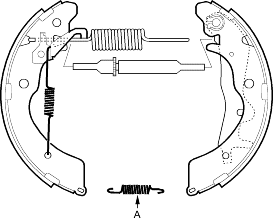
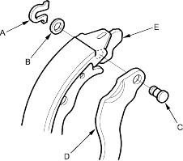
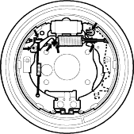
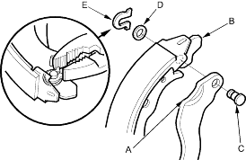

- Lower the brake shoe assembly and remove the lower return spring (A). Be careful not to damage the dust cover of the wheel cylinder.

- Remove the brake shoe assembly from the backing plate and disassemble the shoe assembly.
- Disconnect the parking brake cable from the parking brake lever and remove the brake shoe.
- Remove the U-clip (A), wavy washer (B) and pivot pin (C) and separate the parking brake lever (D) from the brake shoe (E).

- Apply rubber grease (Solvest 113) on to the sliding surfaces as illustrated. Wipe off any excess. Do not get grease on the brake linings.


Sliding surfaces

- Install the parking brake lever (A) to the backward brake shoe (B) and secure with the pivot pin (C), wavy washer (D) and a new U-clip (E). Pinch the U-clip securely to prevent from coming off.
NOTE: Install the wavy washer with its convex side facing outside.

- Connect the parking brake cable to the backward brake shoe.